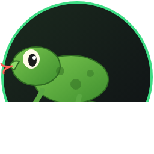

✓ VERIFIED · 55 MODS
LINUX + STEAM
100% AUTOMATIC
Bienvenido, morador del yermo. VNV-Linux instala automáticamente el modpack Viva New Vegas (Core) — 55 mods, mod organizer, NVSE, parches y ajustes de INI — en tu Fallout New Vegas de Steam con Linux. Un solo comando y el Pip-Boy hace el resto.
Requisitos: Steam con Fallout New Vegas (ejecutado una vez con Proton), una cuenta gratis de Nexus Mods y ~4 GB de espacio.
git clone https://github.com/jhoniwana/vnv-linux cd vnv-linux ./vnv.sh ui
Se abre un navegador con el asistente Pip-Boy — cada paso con su botón y progreso en vivo.
./vnv.sh setup # entorno (multi-distro, auto-instala deps) ./vnv.sh login # cookies de Nexus (pasa Turnstile) ./vnv.sh download # descarga los 55 mods (1.1 GB, con retries) ./vnv.sh install # MO2 + mods + root mods + INIs + LOOT ./vnv.sh salud # 12 chequeos de salud (exit 0 = sano) ./vnv.sh run # lanza el juego
Nuevo juego → verifica Stewie Tweaks en Settings = mods cargados. Sprint y QOL desde MCM (JAM).
| Comando | Qué hace |
|---|---|
./vnv.sh ui | Asistente web Pip-Boy (sin terminal) |
./vnv.sh setup | Entorno: deps del sistema + venv + Camoufox + smoke test |
./vnv.sh login | Login Nexus automático (Turnstile incluido) |
./vnv.sh credenciales | Guarda email+contraseña (600) para re-login automático |
./vnv.sh download | Descarga los 55 mods con retries y verificación |
./vnv.sh estado | Verifica descargas vs manifest |
./vnv.sh install | MO2 + importación + root mods + INIs (idempotente) |
./vnv.sh loot | Valida el load order contra LOOT (sin tocar el perfil) |
./vnv.sh salud | 12 chequeos: exe/LAA, NVSE, BSAs, INIs, ESMs, descargas, MO2 |
./vnv.sh esmfix | UE ESM Fixes (xdelta3 nativo + validación estructural) |
./vnv.sh run | Lanza el juego vía MO2 (NVSE) |
./vnv.sh mo2 | Abre el Mod Organizer 2 |
Cada root mod de la guía VNV fue portado a un ejecutable/script nativo de Linux — sin Wine para el trabajo pesado:
| Port | Repo | Qué hace |
|---|---|---|
| xNVSE | xnvse-linux | Instala las DLLs del Script Extender en la raíz del juego |
| 4GB | fnv-4gb-patch-linux | Parchea LAA 4GB en FalloutNV.exe (verificado en el header PE) |
| UE ESM Fixes | ue-esm-fixes-linux | Extrae los patches LZ4/xdelta3 del .mpi y repara los 6 ESMs |
| no-op en Steam | epic-games-patcher-linux | Solo para la versión de Epic Games |
| NO USAR | fnv-bsa-decompressor-linux | Investigación: en el depot actual es un no-op (BSAs ya raw) — mantener vanilla |
nexusmods_session (+ cf_clearance), guardada con permisos 600./Download/?id=…&game_id=130 funciona sin Premium; el botón vive en el shadow DOM de un web component — resuelto inspeccionando el bundle JS de Nexus.bit30 XOR (flags & 0x04). Verdict: el decompressor es no-op en el depot actual.No. El repo solo descarga los 55 mods con TU sesión de Nexus (gratis). No redistribuye nada con copyright.
Solo para MO2 (corre dentro del prefix de Proton). Los root mods (NVSE, 4GB, ESM Fixes) son nativos — sin Wine.
Es normal: el verify revierte los root mods y los INIs. Vuelve a correr ./vnv.sh install (idempotente) y listo.
No lo necesitas. Los 11 BSAs que toca ya vienen sin comprimir en el depot actual (2026). Usar el mod no aporta nada.
Las partidas de otra instalación no son compatibles (formids re-renumerados por los ESM Fixes). Empezá un juego nuevo.